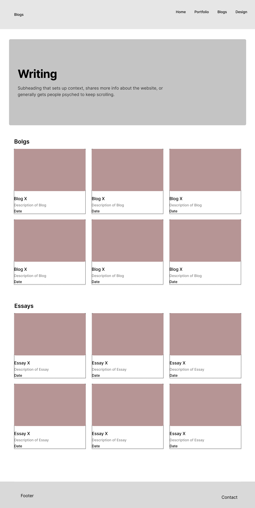
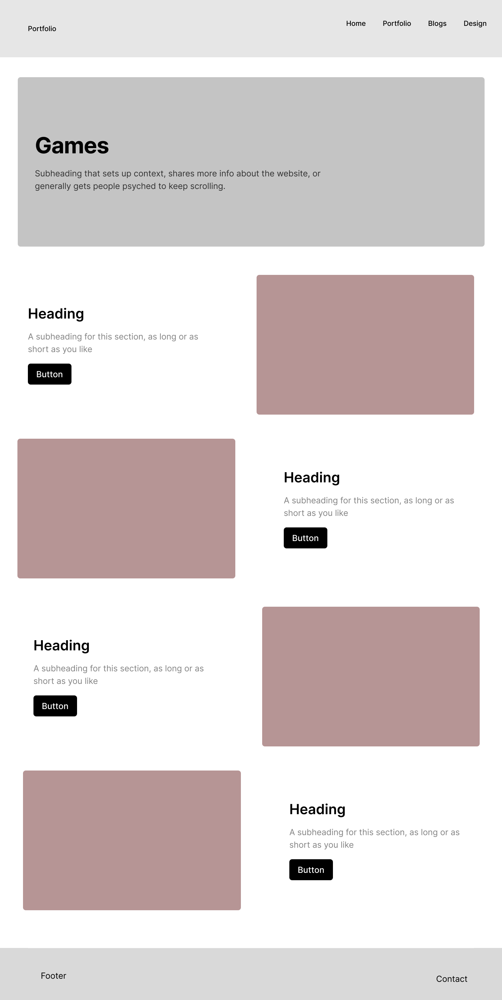
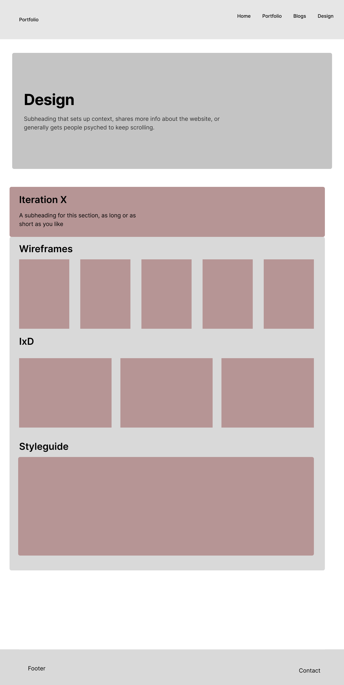
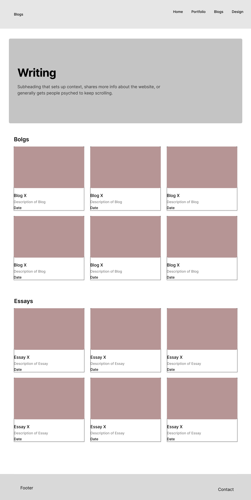
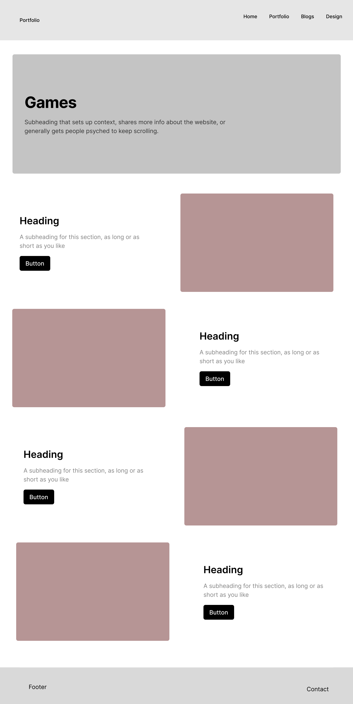
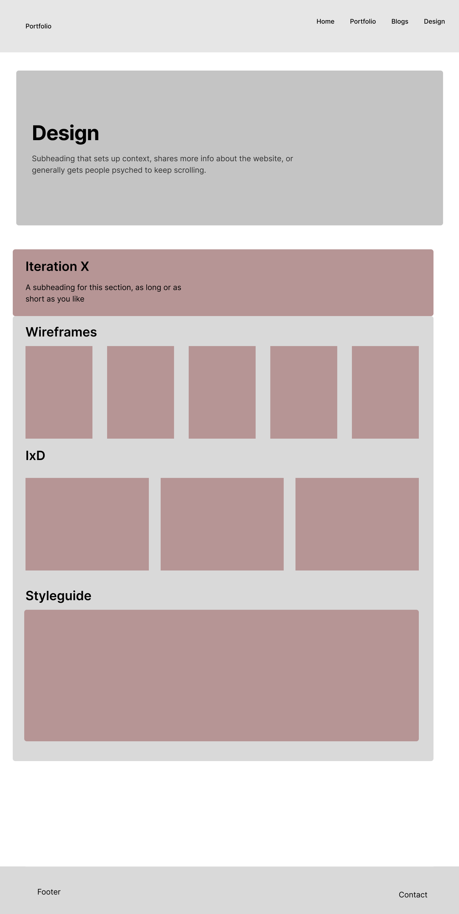

My experience setting up GitHub and my goals for this course.
Setting up GitHub was a straightforward process. I found it fascinating to discover how simple it is to publish a web page. This demystified the process of creating websites, for which I am grateful. I read “As We May Think at 65,” along with articles about the dot-com bubble and Web 2.0. These three readings complement each other well. One key takeaway for me was the personal aspect explored in both “Think 65” and “Web 2.0.” Bush envisioned access to information mimicking the human brain, aiming for a dynamic thought process rather than the hierarchical structure of alphabetized lists. I believe Hypermedia is the closest we've come to replicating the human process of jumping from one thought to another. The personal aspect, however, is what intrigues me the most. Web 2.0 focuses on making the web an interactive and personal experience. While this has many benefits, a concerning truth is that much of this personalization is profit-driven. Personalized ads are a prime example, though the implications go far beyond this. Main Concerns:
- Ecosystems of Conformity: Within the web, ecosystems are being created where people are shown only what they want to see and are reinforced in their beliefs. This could allow harmful views to thrive unchecked.
- Capitalist Overtones: The dot-com bubble illustrates how much of the web is driven by publicly traded companies. Their profits depend on continuous growth, which drives tactics aimed at capturing attention and increasing time spent online. Such practices can foster addiction and unsafe habits.
As a result, the web has become an overwhelming space. While Bush's vision of dynamic information retrieval has been achieved, it is often overshadowed by the noise created by profit-driven motives. This constant growth desired by tech companies seems unsustainable, and the dot-com bubble at the turn of the century signals the risks of unchecked expansion.

 




